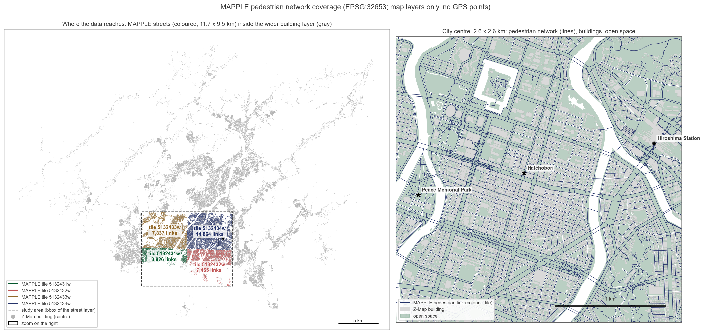
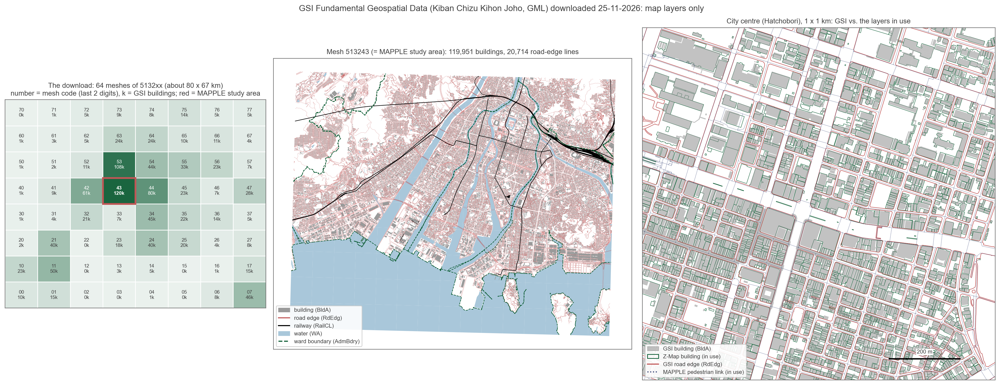
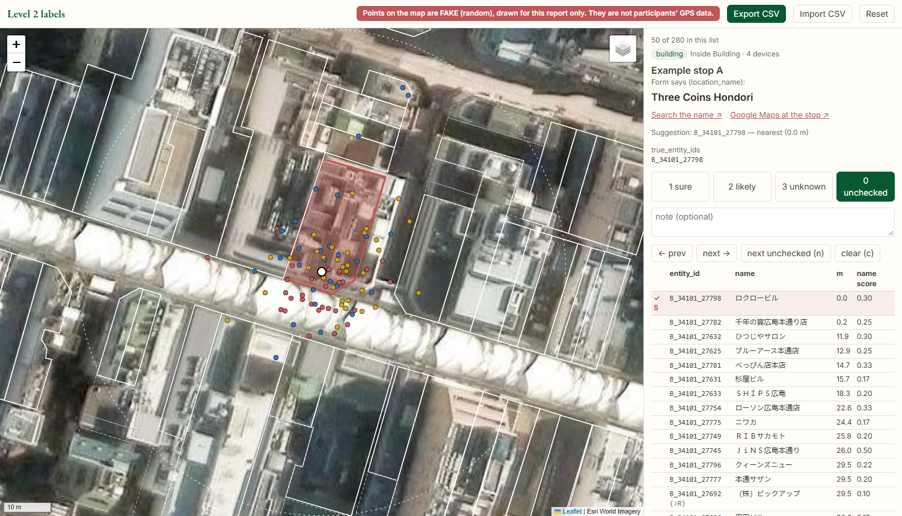
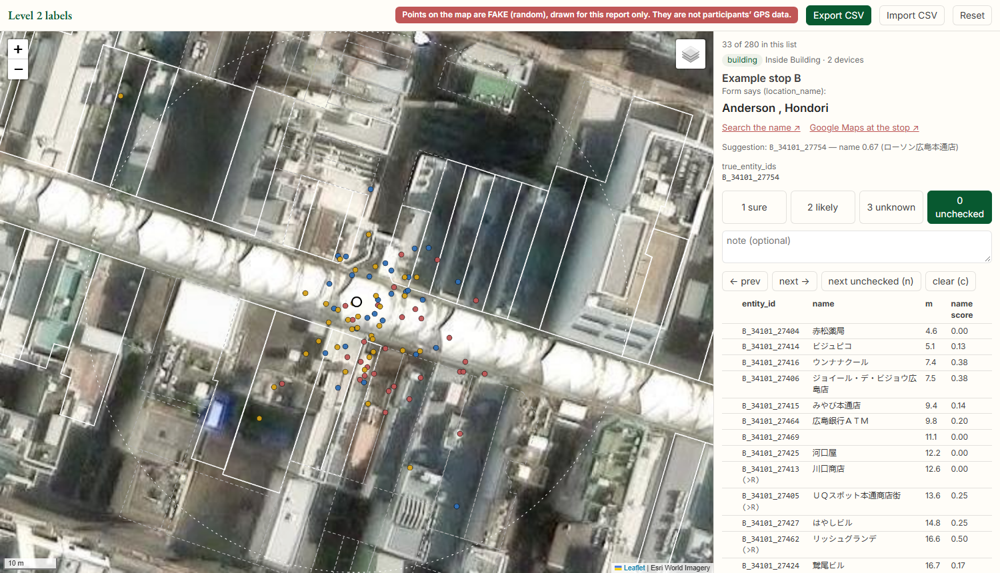
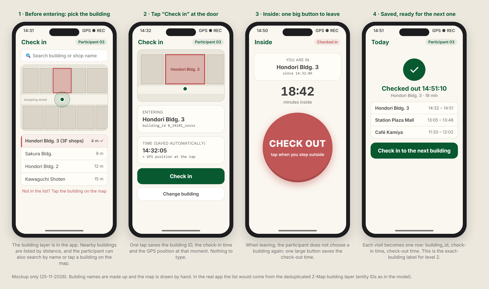

Individual meeting progress
1. Paper direction
Methodological Framework
- Target journal: Computer, Environment and Urban Systems (CEUS)
- Main topic: Develop and validate the probabilistic stay-cluster assignment framework using the Hiroshima ground-truth data. The main contribution is methodological: how to assign GPS stays probabilistically to buildings, streets, and open spaces under positional uncertainty.
- Progress: Completing the draft as a whole.
Transferability
- Target journal: Transportation Research Part C: Emerging Technologies (TRC)
- Main topic: Collect additional ground-truth data in different urban environments, particularly dense urban areas such as central Tokyo, and examine whether the Hiroshima-calibrated model is transferable across urban contexts. Then apply the validated framework to the nationwide MILES dataset.
- Applying framework to bigger data (whole year or seasonal variance)
- Progress: Rough idea
2. Implementation things
Final ST-DBSCAN Hyperparameters
| Settings (eps1, eps2, min_samples) | Shortest stay | Stays per season | Typical stay length |
|---|---|---|---|
| Kato 30 s (70 m, 1100 s, 18) | about 12 min | 7,497–13,767 | 40 min |
| In between (63 m, 920 s, 14) | about 9 min | 10,714–19,603 | 29 min |
| Kato 1 min (50 m, 610 s, 6) | about 4 min | 45,742–81,332 | 5 min |
| Settings | Winter | Spring | Summer | Autumn (2023) |
|---|---|---|---|---|
| Kato 30 s | 74.9% | 70.7% | 70.4% | 74.9% |
| In between | 74.8% | 71.2% | 71.0% | 74.9% |
| Kato 1 min | 71.4% | 68.8% | 68.6% | 71.4% |
- All three settings show the same direction.
- The 1 min settings find many very short stops (two thirds under 10 minutes). These are more often outside: about 10% of the stays are open space, against 4–8% with the other settings, and the share of time in buildings is lower in every season. The seasonal difference becomes smaller.
- The model learned from stops of about 10 minutes, so the 1 min stays (typically 5 minutes) are shorter than anything the model has seen.
- Comparison for 3 x 365 days seems pretty computationally expensive.
- Might be better to decide one setting.
Problem with Data
MILES data label
- Label that could be used?
- trip_mode
- device_os
- heading
- altitude
- gender 76% NA
- age_group 73% NA
Street network limitation

- Our smallest boundary of analysis is bounded by MAPPLE pedestrian network,
- Should we scale up for 365 days analysis?
Kiban Chizu Kihon Joho (基盤地図情報)
-
Found some additional data from https://service.gsi.go.jp/kiban/app/

-
What it is: the official base map of Japan from GSI. It is free and comes as GML files, one per map mesh.
- Area: the download has 64 meshes and covers about 80 × 67 km around Hiroshima. Our study area (the MAPPLE area, mesh 513243) is only one of these meshes (the red square, left).
- Layers: building footprints, road edges, sidewalk lines, railways, rivers and sea, ward boundaries, contour lines.
- Buildings, compared with Z-Map (inside our study area):
- GSI has 119,951 buildings and Z-Map has 116,452. The shapes mostly match (right panel).
- Sometimes GSI draws one block where Z-Map draws several buildings, or the other way round.
- GSI has no building names, floors or uses. Z-Map has them.
- Roads: GSI only has the edges of the road surface. It is not a network with links and nodes like MAPPLE, so it cannot replace MAPPLE for the street candidates.
- Possible uses:
- draw the road surface and the open spaces more exactly;
- check the Z-Map buildings;
- get buildings for a larger area if the analysis is scaled up.
3. Exact building probabilities stuck
- Matching one by one building to form is too hard and time consuming
- The task: for each of the 280 physical stops, find the one building (or street, or open space) that the self-report form names. The form gives a shop name, and the map gives building polygons with Z-Map building names.
- So far, every one of the 280 stops is still unchecked.
- The tool makes a first guess automatically: the nearest entity for 217 stops, and a name match for 63.
- The guess still has to be checked by hand, one stop at a time.
- Hondori is the hardest place. The buildings are narrow, the arcade roof hides the street, and shop names are not building names.
- Example A, "Three Coins Hondori":
- There are 53 candidate buildings within 10 m.
- "Three Coins" does not appear in any building name.
- The nearest building (the red polygon) has a different name, and it is not clear which building the shop is in.

- Example B, "Anderson, Hondori":
- The name match picks a Lawson (ローソン広島本通店), because the two names look alike as text.
- Anderson itself is not among the building names.

- Note: the points on the two maps above are fake. They are random points drawn only for this report, not participants' GPS data. The map, the candidate buildings and the form names are real.
4. New experiment design
- Use Reem-san's app (New GT experiment) and put our building data into the app.
- Check in:
- Before entering a building, the participant picks it from the building list in the app. The list shows nearby buildings by distance; the participant can also search by name or tap the building on the map.
- One tap saves the building ID and the time.
- Check out:
- When leaving, the participant does not pick a building again.
- One large button saves the check-out time.
- Result: each visit becomes one row with the building ID, the check-in time and the check-out time. This gives the exact-building label directly, so there is no matching afterwards.

- The mockup is only an example: the building names are made up and the map is drawn by hand.
5. Potential future problems
a. Exact probabilities for street and open space
- Finding the exact street or open space is harder and trickier than finding the exact building.
- Street:
- In MAPPLE, one street is cut into many short links, and the two sides of a wide road are separate lines.
- A stop on a street usually has many candidates: the median is 18 street links within 10 m, against 7 buildings for a building stop.
- Open space:
- The polygons have no names.
- So a name from the self-report form cannot be matched to them.
b. Redefining "open space"
- What is called "open space" now is not really open space. It is the space that is left over: not a building and not a street.
- It includes parks and squares.
- It also includes parking lots, yards and gaps between buildings.
- So it is closer to "unknown" than to "open space".
- If there is data on the major open spaces (parks, squares, riverbanks, the stadium), it might be better to:
- keep "open space" for those places only;
- rename the rest to "residual space".
c. How much activity to exclude?
- With 365 days, should home and work still be left out, or should all stays be kept?
- The result depends a lot on this choice.
- Share of stay time in buildings, Kato 30 s settings:
| Stays included | Winter | Spring | Summer | Autumn |
|---|---|---|---|---|
| All stays (with home and work, with stadium) | 70.9% | 70.0% | 69.7% | 70.7% |
| All stays, without the stadium area | 70.8% | 70.9% | 70.2% | 70.7% |
| Without home and work, with stadium | 74.9% | 70.7% | 70.4% | 74.9% |
| Without home and work, without the stadium area | 74.9% | 74.0% | 72.5% | 74.9% |
- With home and work: about 70% in every season, so there is no seasonal difference.
- Without home and work: spring and summer are about 4 points lower than winter and autumn.
- Without home and work and without the stadium: only summer stays lower, by about 2 points.
- The other two settings show the same pattern: In between almost the same numbers, Kato 1 min smaller differences.
- "Stadium area" means stays within 250 m of the baseball stadium next to Hiroshima Station.